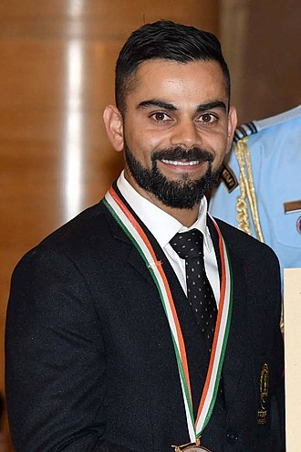

Virat kohli born 5 November 1988) is an Indian international cricketer and
former captain of the India national team. He is widely regarded as one of
the greatest batsmen in modern cricket.[3] Kohli plays as a right-handed
batsman for Royal Challengers Bangalore in the Indian Premier League and
for Delhi in Indian domestic cricket. He holds the record for scoring most
runs in both T20 internationals and in IPL, In 2020, the International
Cricket Council named him as player of decade. Kohli has also contributed
to India's successes, including winning the 2011 World Cup and the 2013
Champions trophy.